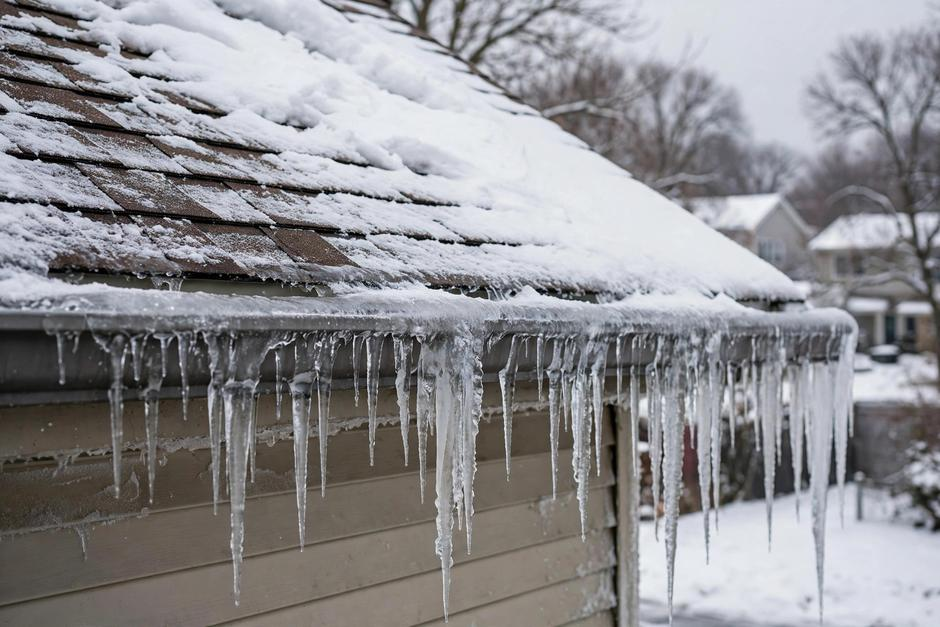
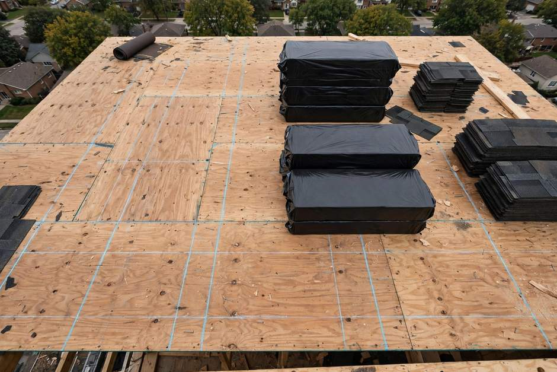
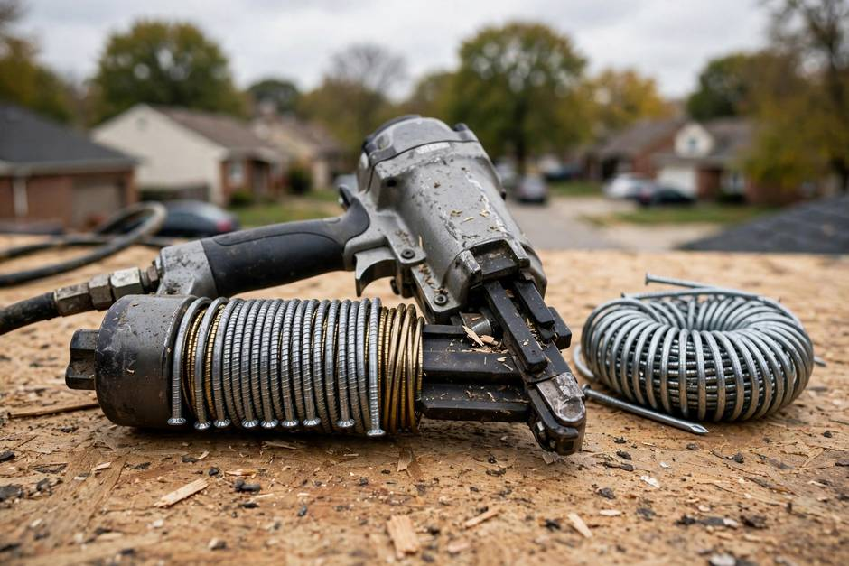
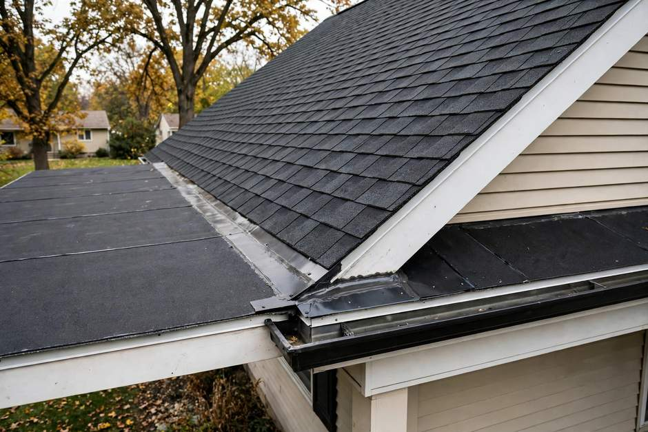

Overflow at the eave
Overflow points to blockage, size, fall or downspout capacity. Ask how the cause would be identified before a scope is agreed.
Gutter replacement Des Plaines IL homeowners ask about is rarely gutters alone: downspouts, fascia and soffit form one roofline with the roof edge, and the condition of each affects the others. This page explains the roofline as a system, the materials described in Chicago-area guides, and how gutter work fits with re-roofing — with scope confirmed when you call (224) 802-4866.
Call (224) 802-4866 during business hours and describe what you are seeing. Hours: Mon–Tue 7:30 AM–7:00 PM, Wed–Fri 7:30 AM–7:30 PM, Sat 8:30 AM–5:00 PM, Sun closed.
Call Now (224) 802-4866 → No online booking. No email. Phone calls only.
A gutter collects water at the eave; a downspout carries it to the ground; fascia is the board the gutter hangs from; and soffit is the underside of the eave, where ventilation intake usually sits. When one part fails, the others feel it: a rotten fascia board will not hold a new gutter, a blocked gutter overflows onto fascia and soffit, and a soffit with no intake starves the ventilation path. That is why this page treats the roofline as one system, and why the condition of the fascia is part of any gutter conversation.
Chicago-area guides describe seamless aluminium as the common default for gutters, with copper, steel and zinc as premium options carrying wide guide spreads. No price is stated on this page, and no material is presented as offered until scope is confirmed when you call. Gutter work is often assessed during a roof replacement, when the roof edge is already exposed, and the ventilation side of the eave is covered on the attic ventilation page. Homes across Des Plaines, including in Oakton and Orchard Place, vary in roofline age and condition, and the fascia is worth a look before a new gutter is hung.
These are the parts of the roofline and the questions each one raises. Repair, downspout and soffit-and-fascia topics are covered here on one page, as one roofline system.
The channel at the eave. Ask about material in general terms — seamless aluminium is the Chicago-area default in guides — and about 5-inch versus 6-inch profiles as education only.
The vertical runs that carry water to the ground. Ask how downspout placement, number and discharge are described in the scope, and what happens at the ground.
The board the gutter hangs from. If fascia is rotten, a new gutter cannot be hung soundly until that is addressed. Ask how fascia condition would be checked and described.
The underside of the eave, and the usual home of ventilation intake. Soffit condition and vent openings bear on the attic ventilation path; see the attic ventilation page.
A leaking seam or a sagging section is a different conversation from a roofline that has failed throughout. Ask what would make repair sensible and what would point to replacement, in writing.
Gutter cleaning as a standalone service is not claimed on this page. Fall clearing before freeze is described below as homeowner guidance. Ask what, if anything, is within scope when you call.
Call (224) 802-4866 and describe what you see: overflow, sagging, leaking seams, or water at the foundation. Ask what gutter and roofline scope is available and what the next step would be.
The gutters, downspouts, fascia and soffit are looked at, along with the roof edge. Ask what the visit covers and how findings are shared with you.
Ask for findings and an estimate in writing, describing the material in general terms, the fascia condition, and anything that would change the scope if rot is found.
Confirm what is included and excluded in writing — gutters, downspouts, fascia, soffit — and whether the work is bundled with roofing work. No product or guard claim is made on this page.
Ask how the finished runs are checked for fall and flow, what you are shown when the work is done, and what records you keep.
Material and size education from Chicago-area guides. No material is presented as offered, and no price appears on this page.
Chicago-area guides describe seamless aluminium as the common default: long runs formed with few joints. Ask how the material for your roofline would be described in the written scope.
Premium options in guides, with wide guide spreads and different weathering behaviour. They are mentioned here as education; confirm relevance and scope when you call.
Profile size is an education topic: larger profiles carry more water, which matters on steep or large roof planes. Ask how size would be chosen for your roof.
Gutters hang from the fascia and fall gently toward downspouts. Sagging usually points to hangers, fascia or both. Ask how hangers and fall are described in the scope.
Water must leave the downspout somewhere sensible. Underground drainage and grading are not claimed on this page; ask how discharge at the ground is handled.
No gutter-guard product, brand or effectiveness claim appears on this page. Guards are a separate product decision; ask about them specifically if they interest you, and expect no effectiveness promise.
Chicago seasonal guides call fall gutter clearing before freeze the highest-value pre-winter task. That is homeowner guidance, not a service claim on this page. Clear debris so water can move before it freezes.
Water sheets over the gutter edge in heavy rain, running down siding and toward the foundation. The cause may be blockage, size, fall or a combination.
Ask how the cause would be identified, whether fascia and soffit would be checked, and what the written findings would say.
A gutter run sags and pulls from the fascia, and the fascia behind it shows rot or staining. Hanging a new gutter on failed fascia would repeat the problem.
Ask how fascia condition would be assessed, and how fascia work would appear in the written scope.
The roof is being replaced, the roof edge is exposed, and the gutters, fascia and soffit can all be assessed while the work is open.
Ask whether roofline work should be bundled with the roof job, and read the roof replacement page for the wider picture.
These are the problems general guidance associates with gutters and the roofline. New gutters alone do not prevent ice dams, and this page does not claim otherwise.
Ask a pro →Overflow points to blockage, size, fall or downspout capacity. Ask how the cause would be identified before a scope is agreed.
Sagging usually involves hangers, fascia, or both. Ask how the fascia would be checked, since it is what the gutter hangs from.
Joints are the weak points of sectional gutters, and corners collect debris. Ask how joints and corners would be treated in the scope.
Ice at the gutter edge is usually an ice-dam story driven by attic heat, not a gutter story alone. New gutters do not prevent ice dams. See the attic ventilation page for the mechanism.
“Thank you Patrick for doing an amazing job. Great work me and my wife are very happy. Also thanks for being reliable.”
Phil Negron2 months ago · Gutter repairs · Google review
✓ Google review“I use WP Exteriors to repaint my roof and do as some tuckpointing on the exterior of my building. Pat and his team were very professional and communicative. They did a good job explaining what needs to be done to my home immediately and what I can plan for in the future. I will definitely be using them in the future.”
Patricia Murray2 months ago · Google review
✓ Google review“Patryk was great to work with and extremely professional. I highly recommend WP exteriors and plan on using them again in the future!”
Brian Avila Gaona5 months ago · Roof inspection · Google review
✓ Google reviewAsk for the reasoning in writing. A single leaking seam or a short sagging section is a different conversation from gutters that overflow throughout, hang from rotten fascia, or have failed at many joints. Fascia condition often decides the question, because a new gutter needs sound fascia to hang from.
Chicago-area guides describe seamless aluminium as the common default, with copper, steel and zinc as premium options carrying wide guide spreads. No price is stated on this page, and no material is presented as offered. Confirm scope and material when you call.
Gutter cleaning as a standalone service is not claimed on this page. Fall clearing before freeze is described here as homeowner guidance, following Chicago seasonal guides that call it the highest-value pre-winter task. Ask what, if anything, is within scope when you call.
No, not alone. Ice dams are driven by attic heat warming the deck, melting snow that refreezes at the eave. Gutters sit at the eave where ice forms, but replacing them does not address the attic-heat cause. The attic ventilation page explains the mechanism.

Attic VentilationAttic ventilation as part of the roof system: intake, exhaust and the ice-dam mechanism.Explore →
Roof ReplacementFull tear-off and replacement, the code and climate angles for Des Plaines, and how repair and replacement compare.Explore →
Roof RepairLeak repair, flashing and the repair-or-replace decision, explained for Des Plaines roofs.Explore → Roof InspectionWhat an inspection covers, when one matters locally, and how findings are shared in writing.Explore →
Roof InspectionWhat an inspection covers, when one matters locally, and how findings are shared in writing.Explore →
Flat Roof RepairLow-slope systems, seams, ponding and tie-ins, with repair-or-replace questions to ask.Explore → Emergency Roof RepairActive leaks and storm breaches: what stabilisation means, safety while waiting, and honest scope limits.Explore →
Emergency Roof RepairActive leaks and storm breaches: what stabilisation means, safety while waiting, and honest scope limits.Explore → Storm Damage Roof RepairHail and wind damage in one place: mechanisms, documentation, and the lawful contractor role.Explore →
Storm Damage Roof RepairHail and wind damage in one place: mechanisms, documentation, and the lawful contractor role.Explore → Skylight InstallationSkylight replacement, reflashing and leak sources, with fixed and venting units explained.Explore →
Skylight InstallationSkylight replacement, reflashing and leak sources, with fixed and venting units explained.Explore →Call (224) 802-4866 during business hours to describe your roofline and ask what gutter help is available. Hours: Mon–Tue 7:30 AM–7:00 PM, Wed–Fri 7:30 AM–7:30 PM, Sat 8:30 AM–5:00 PM, Sun closed.
Call (224) 802-4866 →Call (224) 802-4866 to talk about your roof. Describe what you are seeing — a leak, a stain, damage after a storm — and ask what help is available and what the next step would be. There is no online booking and no email contact. Hours: Mon–Tue 7:30 AM–7:00 PM, Wed–Fri 7:30 AM–7:30 PM, Sat 8:30 AM–5:00 PM, Sun closed. The office is at 638 Birchwood Ave, Des Plaines, IL 60018.